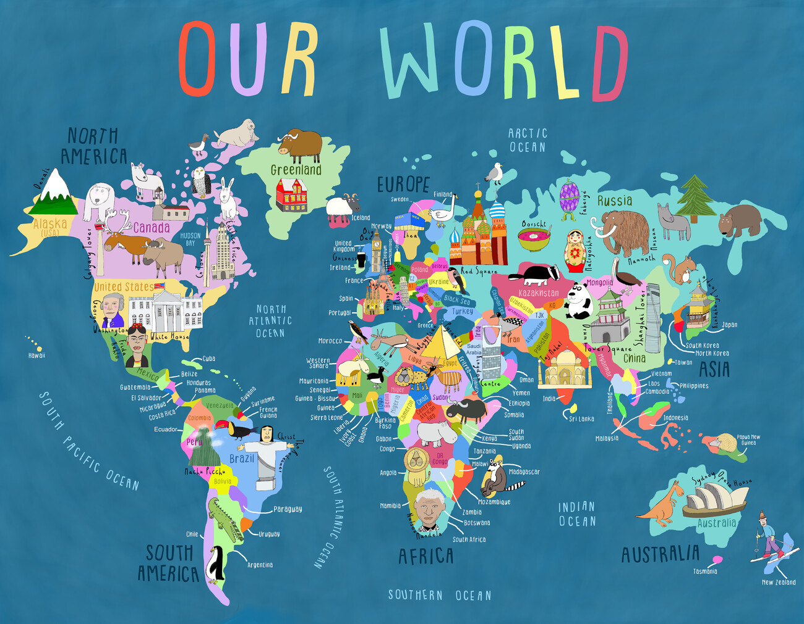
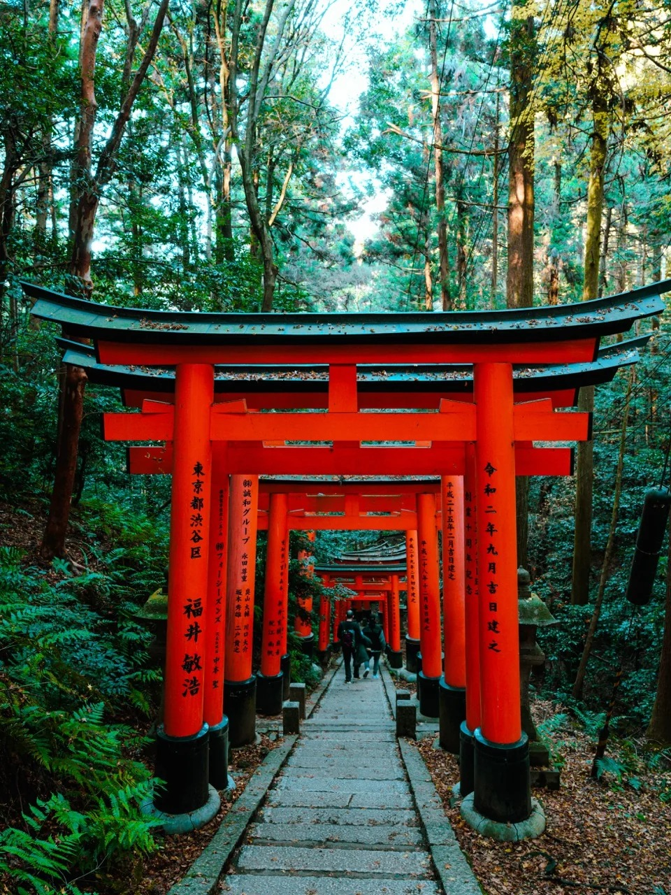
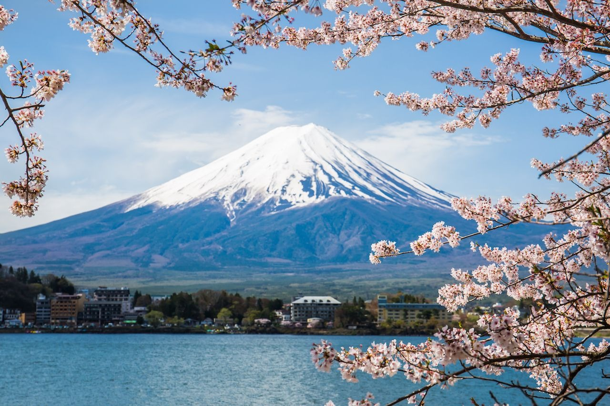
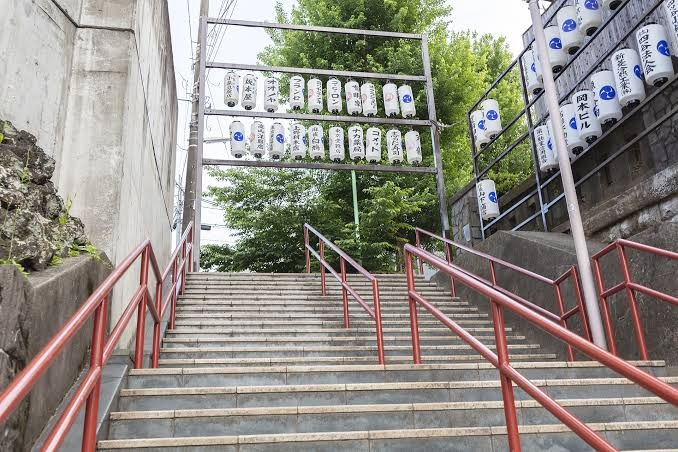
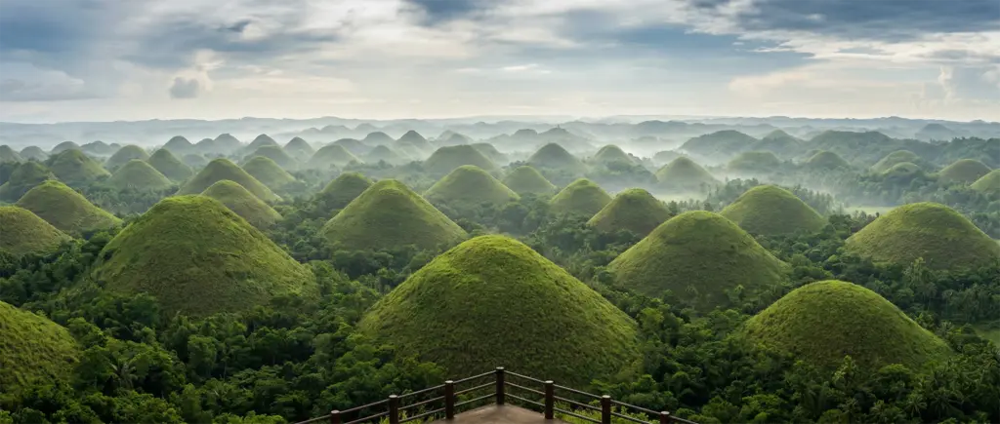
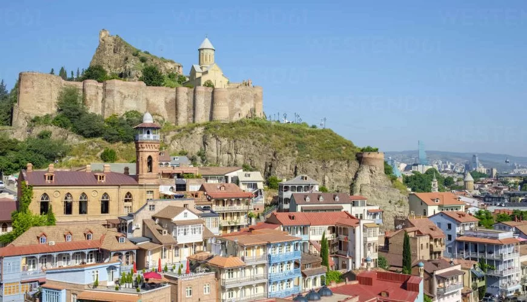
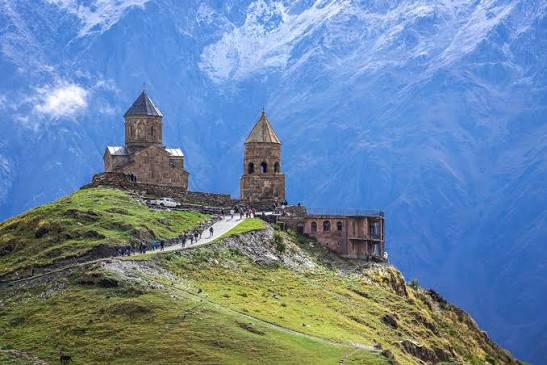
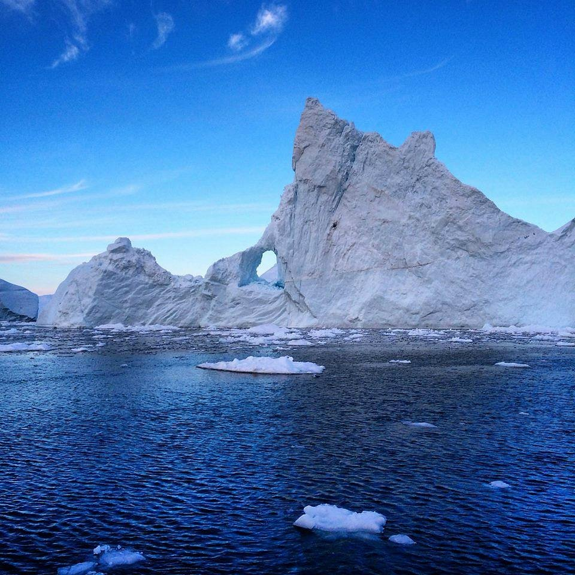
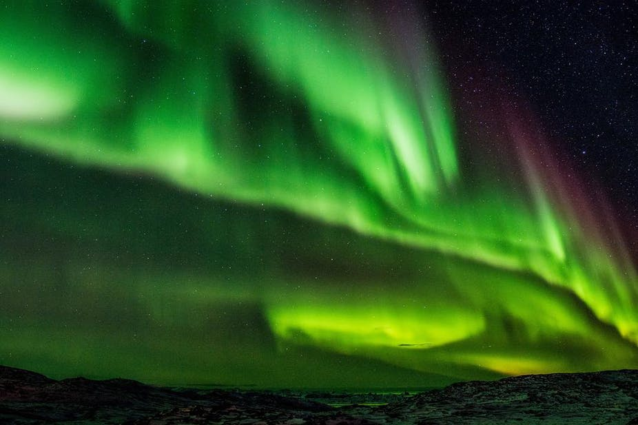

A Traveler's Diary
Explore beautiful and historic places across four unique countries.

Tokyo to Tomorrow: Japan
Discover Japan's historic landmarks, vibrant cities, and beautiful landscapes.

Image Source: https://danny-cph.com/fushimi-inari-trail-hike/The Place: That patience and precision lives on in Kyoto at Fushimi Inari Taisha, a sacred shrine dating back to 711 where thousands of donated red torii gates climb the mountain.

Image Source: https://matadornetwork.com/read/epic-views-mount-fuji/The Place: Rising 3,776 meters, Mount Fuji is Japan's highest sacred peak and a UNESCO cultural site, immortalized in Hokusai's woodblock prints nearly two hundred years ago.

Image Source: https://photock.org/photo/suga-shrine-stairs-2The Place: The journey through Japan concludes in Tokyo at the Suga Shrine stairs in Yotsuya—famous from the film Your Name—where technology bridges distance and connects people.
Sea to Snow: Philippines, Georgia & Greenland
Three completely different worlds—tropical islands, Caucasus mountains, and Arctic ice.
Philippines: Tropical Islands & Blue Lagoons

Image Source: https://ocarramedia.com/chocolate-hills-bohol-guide/The Place: In Bohol, more than 1,200 cone-shaped grassy hills turn chocolate-brown during the dry season—said in local legend to be the tears of a heartbroken giant.
 Image Source: https://guidetogreenland.com/book-trips-holiday/chasing-the-northern-lights-ilulissat-disko-bay/
Image Source: https://guidetogreenland.com/book-trips-holiday/chasing-the-northern-lights-ilulissat-disko-bay/
The Place: Situated in Bacuit Bay, El Nido features towering limestone cliffs, hidden lagoons, and traditional wooden banca boats with bamboo outriggers.
Georgia: Ancient Cities & Caucasus Mountains

Image Source: https://www.georgia-tours.eu/wp-content/uploads/2026/05/narikala.webpThe Place: Georgia's capital blends carved wooden balconies, historic sulfur baths, the glass Bridge of Peace, and the 4th-century Narikala Fortress above the Mtkvari River.

Image Source: https://en.wikipedia.org/wiki/Gergeti_Trinity_ChurchThe Place: Perched at roughly 2,170 meters near Stepantsminda, the 14th-century Gergeti Trinity Church stands in dramatic solitude beneath snowy Mount Kazbek (5,050 m).
Greenland: Glaciers & Northern Lights

Image Source: https://www.tripadvisor.in/Attraction_Review-g609123-d480783-Reviews-Ilulissat_Icefjord-Ilulissat_Qaasuitsup_Municipality.htmlThe Place: On the world's largest island, the UNESCO-listed Ilulissat Icefjord is filled with massive icebergs calving from Sermeq Kujalleq, one of Earth's fastest glaciers.

Image Source: https://guidetogreenland.com/book-trips-holiday/chasing-the-northern-lights-ilulissat-disko-bay/The Place: Across Greenland's clear arctic nights, green waves of the Aurora Borealis ripple across the stars—completing a journey from tropical seas to polar snow.
Where Will You Point Your Lens Next?
From abacus to smartphone, and from tropical islands to arctic ice, technology helps us explore and appreciate our world.
Arigato (Japan) • Salamat (Philippines) • Madloba (Georgia) • Qujanaq (Greenland)
Back to Top ↑